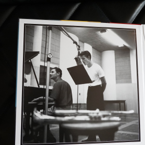
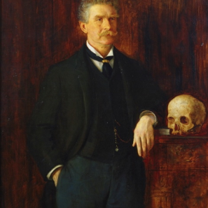

을유 시리즈
-
[연애편지] 미리보기
#5. 보부아르가 보낸 마지막 편지
매우 소중한 당신. 어떤 편지도 부치지 않고, 어떤 편지도 오지 않는 영원 같은 시간이 흘렀어요. 당신에 관한 몇 가지 소식이 새어 들어왔어요. 당신이 『더 네이션』에 쓴 〈폴라무르 박사〉의 시나리오 작가(그의 이름을 잊어버렸어요)에 대한 훌륭한 글과, 또 어떤 잡지에서였는지 기억나지 않지만 여인들과 사랑, 결혼 등에 관해 나눈 흥미진진한 인터뷰들이요. 알랭인가, 세르주인가가 당신이 매우 고상한 의상을 걸치고 다닌다고 일러 주던데, 정말 당신이 맞아요?
-
[현대 예술의 거장]
쳇 베이커 : 그대 다시는 고향에 가지 못하리
저는 두 달간을 로마와 사르데냐에서─사르데냐는 가난하고 우수에 젖은 기막히게 멋진 섬으로, 당신 같은 사람을 위해 만들어진 곳이에요─세상을 그저 응시하고 탐정소설들을 탐독하는 것 말고는 아무 일도 하지 않고 지냈어요. 이제 저는 무엇에 투신해야 할까요? 글을 쓰고 싶은 열망은 매우 큰데, 불확실성이 조금 불편하게 하는군요.
-
[보이지 않는]
#3. 보이지 않는 빛, 보이지 않는 괴물
사르트르는 놀랍도록 잘 지내고 있어요. 몸이 무척 말랐어요(엄격한 식이요법의 결과지요). 보스트는 다시 보았는데, 올가는 아직 만나질 못했어요. 상황은 여전해요. 그녀는 헛소리하고 광분하여 펄펄 뛰고 때로 폭력을 쓰기도 해요. 그녀는 끔찍하게 불행해하지만, 그녀에게도 책임은 있지요.
-
[컬트] 미리보기
#5. 마셜 애플화이트와 천국문
5월에는 거의 확실하게 미국에 갈 것 같아요. 당신이 숨어 있는 곳이라면 어디든 찾아낼 거예요. 마지막으로 제 책의 저작권에 대한 계약을 맺은 사람은 빌 타그였고, 저는 봄쯤에 나타날 거예요. 소중한 늙은 바보, 멋 내느라 너무 바쁘지 않다면 소식 좀 보내 줘요. 언제나 그렇듯 큰 사랑을 보내요.
-
[을유세계문학전집]
#5. 보부아르가 보낸 마지막 편지
사흘 전에는 스카치를 마시러 니스로 내려갔다가 우연히 우체국 앞에서 늙은 앙드레 지드와 마주쳤어요. 그를 알아요? 작년에 노벨 문학상을 받은 프랑스 작가예요. 미국에서 그의 『일기』가 번역됐는데, 그 책은 미국인에게는 길고 지루할 거예요. 다수의 이해하기 어려운 프랑스인과 그들에 얽힌 일화 그리고 전적으로 프랑스적인 세부 사항들이 인용되어 그가 무엇을 이야기하는지 모를 것이기 때문이지요.
-
[고통을 말하지 않는 법] 미리보기
#4. 타고난 성격과 만들어지는 성격
그는 예전에 프랑스 문학의 리더였고, 대단히 똑똑하며 때때로 재미나기도 했으며, 자유와 동성애를 위해 투쟁했어요. 지금은 매우 연로하고, 안경과 펠트 모자를 쓰고서 저를 웃게 하지요. 왜냐하면 무척 다정한 모습을 보이는 동시에 우리의 만남이 3분을 넘길까 노심초사하기 때문이에요. 그는 쉬 피곤해져요. 노년이에요.